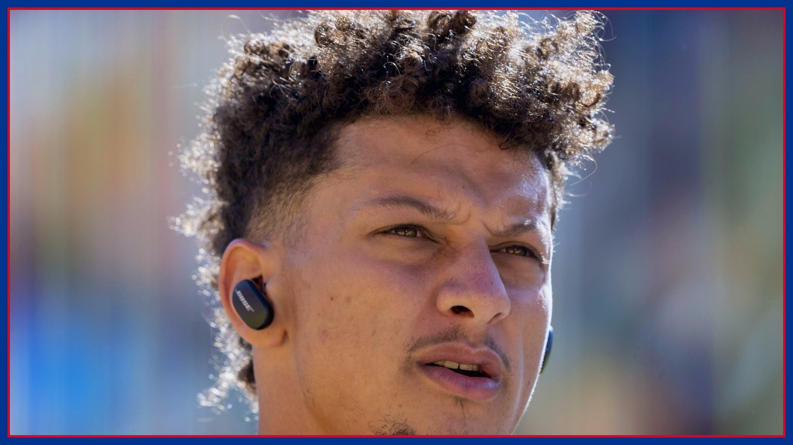

Film Room: 15 quarters without allowing a touchdown — and now Patrick Mahomes walks in
Buffalo's defense has gone 43 straight drives and 15 straight quarters without allowing a touchdown, per the Democrat and Chronicle — against six backup quarterbacks. Patrick Mahomes arrives Thanksgiving night with 13 touchdown passes and no interceptions in his last four games, per NFL on CBS. Film Room grades both streaks before one of them breaks.

Here is the number Buffalo's whole month is built on: 43 consecutive opponent drives without allowing a touchdown, a franchise record, and 15 consecutive quarters without an end-zone trip, per the Democrat and Chronicle. Here is the number standing across from it on Thanksgiving night: Patrick Mahomes has thrown 13 touchdown passes without an interception across his past four games, per NFL on CBS via Bills Wire, and eight of those touchdowns have come in the last two weeks, per Sports Illustrated. When the Kansas City Chiefs (8-2) visit the Buffalo Bills (9-1) on Thursday, Nov. 26 at 8:20 PM ET at Highmark Stadium on NBC — the first Thanksgiving home game in Bills history, per the Democrat and Chronicle — one of those streaks is the truth about a Super Bowl defense. The other one is a schedule artifact. Film Room has watched every snap of the streak. This is the week we find out which is which.
Start by grading the streak honestly, because the quarterbacks are part of the film. Buffalo's touchdown-less run has been built against a revolving door: undrafted rookie Joe Fagnano in relief for Baltimore, Carson Wentz and Max Brosmer for Minnesota, rookie Cade Klubnik in relief for the Jets, and Kyle McCord making his second career start for Miami — the sixth backup quarterback Buffalo has faced in four games, per the Democrat and Chronicle's reporting earlier this month. Those five quarterbacks combined for a 48.1 percent completion rate, zero touchdowns and four interceptions in that stretch, per the same reporting. Defensive coordinator Jim Leonhard's unit deserves real credit — you can only bury the quarterback in front of you, and Buffalo has buried all of them — but nobody in Orchard Park is pretending McCord-to-Mahomes is a small step up. Second-year defensive tackle Deone Walker said it plainly, per Bills Wire: "It's a big test. But coach Brady, the whole year keeps saying put the ball down. Nameless, faceless opponents, put the ball down, no matter what."
Now grade Mahomes' heater the same way. Kansas City has won three straight by at least 20 points — something the Chiefs had not done since 1997, per the Democrat and Chronicle — but those wins came against the Jets, Falcons and Cardinals. Mahomes' season line is 22 touchdown passes against just four interceptions with more than 2,700 passing yards, per Sports Illustrated, and he is not hiding his confidence. "I'm playing good football," Mahomes told CBS Sports' Evan Washburn, per Bills Wire. "I think it helps when you run the football like we're running it, and the receivers and tight ends making plays for me. But we gotta keep it going." The film question for Leonhard is pressure: Greg Rousseau just posted the first double-digit sack season of his career with two sacks against Miami, per Sports Illustrated — but Rousseau was also a new name on Monday's injury report, limited with a back issue on an estimated report from a walkthrough day, per Bills On SI. Buffalo's streak has been built on heat without blitzing itself into trouble. If the heat does not travel, Mahomes will hold the ball, extend plays and test the exact part of this defense that has not been tested in a month.
That part is the secondary, and Monday's report — estimated participations only, because Buffalo did not hold an official practice, per Bills On SI — kept the biggest question of the week open. Cornerback Christian Benford (groin) was the lone Bill listed as a non-participant, and Bills On SI noted it seems overly optimistic to expect him back 11 days after the injury, with another practice-squad call-up for Tre'Davious White looking likely. White played 42 percent of the defensive snaps against Miami in his first live action of the season, per Bills On SI, alongside rookie Davison Igbinosun and Maxwell Hairston. Against McCord, that group allowed 102 passing yards. Against Mahomes, the margin for a single busted coverage is a touchdown that ends a 43-drive streak on one play. The good news on the same report: defensive tackle Ed Oliver (oblique) was a full participant, and tight end Dalton Kincaid (thumb/ankle) and linebacker Dorian Williams (calf) were both limited after missing the Miami game — head coach Joe Brady answered "yeah" when asked if Kincaid was close to being available this past Sunday, per Bills On SI.
The counterpunch is on the ground, and it might be the most important matchup of the night. Kansas City's run defense ranks 10th in the league at 95.5 yards allowed per game and has held five teams to 77 yards or less, per the Democrat and Chronicle — but it has not faced James Cook, who ranks third in the NFL at 106 rushing yards per game, per the same preview. Cook also walks in with history on the line: his 89 yards and a touchdown against Miami made him the first player in NFL history with at least 75 rushing yards and a rushing touchdown in nine straight games in a single season, per the Bills, and one more such game ties Terry Allen's all-time record of 10 straight, set across the 1995 and 1996 seasons, per Buffalo Rumblings. Buffalo's offense ranks second in the NFL at 31.3 points per game, per the Democrat and Chronicle, but it is coming off its sloppiest outing of the year — two touchdowns on five red-zone trips, two Josh Allen interceptions and three sacks taken against a 1-9 Miami team. The cleanest way to protect a banged-up secondary from Mahomes is to keep him on the sideline, and the cleanest way to do that is Cook behind an offensive line that now has right tackle Spencer Brown (back) and right guard O'Cyrus Torrence (ankle) both limited on Monday's estimated report, per Bills On SI. Wide receiver DJ Moore, at least, is a full go in every way that matters: he does not appear on the injury report at all after hyperextending his knee against Miami, and Brady raved about him Monday, per Bills On SI: "Sometimes, I wish he wasn't as tough. He's kind of like Josh, when he gets tackled, I just hope he gets up, because of how important he is."
The stakes need no selling, but the tiebreaker math does. Buffalo and Kansas City have split their 10 meetings since 2020 at five apiece — Allen is 5-1 in the regular season, Mahomes is 4-0 in the playoffs, and three of those four playoff losses came at Arrowhead Stadium, per the Democrat and Chronicle. That is why Thursday is worth more than a game in the standings, where the 9-1 Bills sit atop the AFC with the 8-2 Chiefs and 8-2 Denver Broncos drafting behind them, per the same preview: win, and any January rematch runs through Orchard Park. Allen is keeping the framing small, per the Democrat and Chronicle: "It's the most important one because it's the next one. All the seeding implications, all that is what it is. We know what type of team they are, they've been one of the best teams in the league the last 10 years." Brady echoed it, per Bills Wire: "We only played one game this week, and it was this one. Now that this is over, now we'll regroup and figure out what we've got to do to go out on Thursday." Even the weather is joining the defense's side of the argument — the National Weather Service forecast discussion calls for steady, soaking rain moving in Thursday with temperatures in the upper 30s to low 40s and breezy conditions in Orchard Park, per the Democrat and Chronicle, with snow not expected to be the primary concern. Rain does not stop Mahomes. It does shorten games, slick the football and reward the team that can hand off 30 times.
So here is the Film Room verdict, and it is the same one this desk has been building toward for three weeks: the streak is real, and Thursday is its final exam. Buffalo's defense has not allowed a touchdown since Derrick Henry's 2-yard run on Nov. 1, per AP reporting earlier this month. It has done it with a rookie corner, a practice-squad All-Pro, a safety playing on a bad toe and a front that finally has its sack leader in double digits. Mahomes arrives with 13 touchdowns and no interceptions in four games, a three-game win streak by 20-plus, and a 4-0 playoff record against this franchise that hangs over every meeting until Buffalo changes it. If the streak survives Thanksgiving night, stop calling it a schedule artifact — it is the identity of the AFC's No. 1 seed. If it breaks in the first quarter, the 9-1 record still stands, but the January question gets louder. Either way, we stop guessing on Thursday. Go Bills — and get every Chiefs-week practice report, starting with Tuesday's update on Benford, Kincaid and Williams, in your inbox every morning with The BNC Blitz.
You got the setup for free. The rest of this breakdown — the snaps, the stats, the stuff that actually wins arguments — is for BNC Blitz readers. It's free: Bills news, one stat that matters, and one take in your inbox every morning. Join the Blitz and finish the read.
Free forever. No spam, unsubscribe anytime.